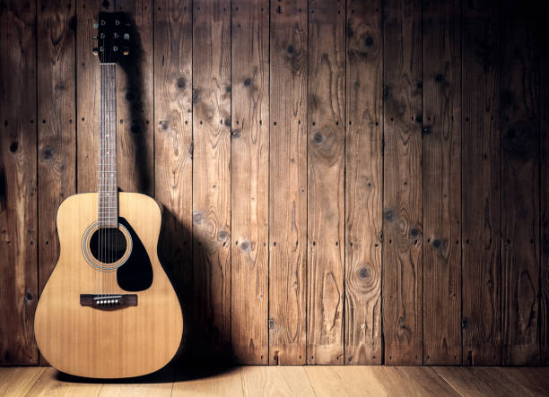
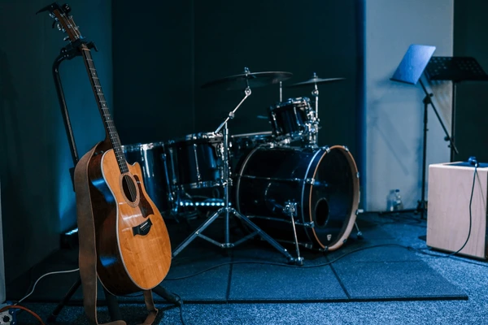
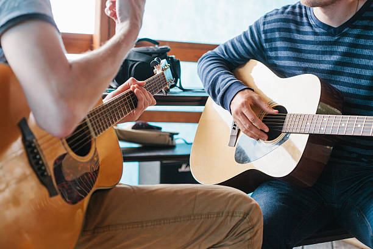

What is a Guitar?
Guitar is both a creative outlet and a technical skill. It combines rhythm, melody, coordination, and personal expression in a way that makes every practice session feel rewarding.
A quiet room at home is great for concentration and practice.
Other great places include studios, jam spaces, and outdoor settings for performances.

Who
This page is about me as a guitar player and the kinds of musicians who inspire me.
I am especially interested in expressive players who balance technique with emotion and feel.
Some players that inspire this interest include blues, rock, and singer-songwriter guitarists such as Stevie Ray Vaughan, B.B. King, Jimi Hendrix, Eric Clapton, and John Mayer.
- I enjoy both electric and acoustic guitar.
- I like expressive phrasing, tone, and more melodic approaches.
- I use guitar as both a hobby and a long-term skill to improve.
When
I started playing guitar in my early teens, around the age of 13. I picked it up because I was drawn to the sound and the idea of being able to create music on my own.
Over the years, I've played in various settings, from solo practice to small jam sessions with friends. I find that playing guitar is a great way to unwind and express myself after a long day.
The best times to practice guitar are when I can focus without distractions.
Short daily practice sessions often work better than rare long sessions.

| Time | Practice Focus | Why It Works |
|---|---|---|
| Morning | Warm-ups and scales | Fresh mind and good focus |
| Afternoon | Learning songs | Good balance of energy and time |
| Night | Improvisation and relaxed playing | Better creative mood |
Where
Guitar can be practiced in many places, but the environment changes the experience.
A quiet room at home is ideal for concentration and steady improvement.
Other great places include studios, jam spaces, and outdoor settings for inspiration.
How
Learning guitar takes repetition, patience, and structure.
The best approach is to split practice into technique, songs, ear training, and creativity.
Progress is easier to see when goals are small and consistent.

- Start with tuning and warm-ups.
- Practice chords, scales, or finger exercises.
- Work on songs and finish with creative playing.
Why
I enjoy guitar because it makes me feel creative, calm, and challenged at the same time.
It gives me a skill I can build for years while also being something fun in the moment.
Music also connects memory, emotion, and discipline in a way that few hobbies do.
- It improves patience and discipline.
- It helps with self-expression.
- It creates a lifelong connection to music.